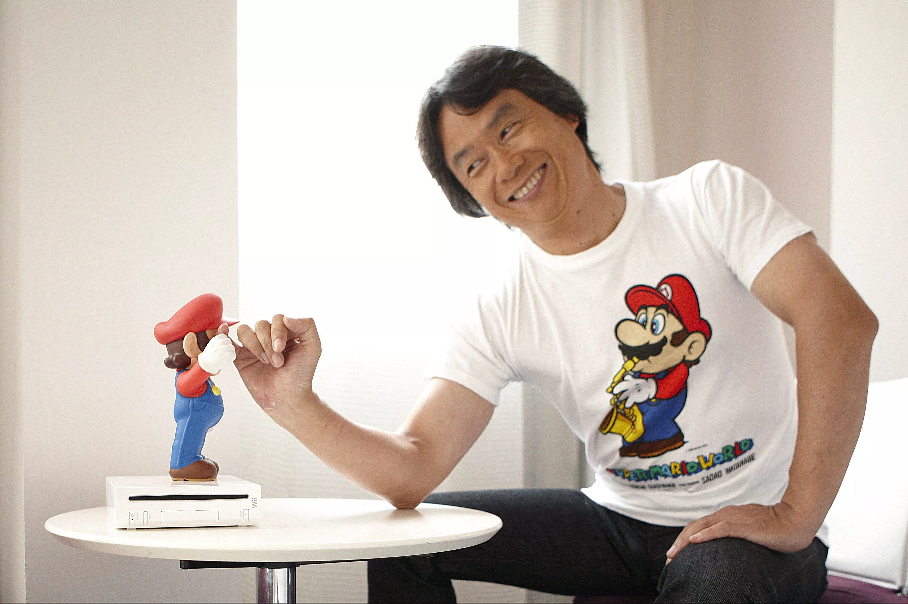

Shigeru Miyamoto é um designer e produtor de jogos eletrônicos, conhecido por ser o criador das séries Super Mario.
Dentre seus muitos trabalhos na Nintendo o personagem do encanador bigodudo é sem duvida o mais famoso. Mas...
Donkey Kong, The Legend of Zelda, Star Fox, F-Zero e Pikmin estão na lista de outras criações do executivo. E tem varios outros.

Nascido em em 16 de novembro de 1952 na cidade de Sonobe, Japão, Miyamoto formou-se na Faculdade Municipal de Artes Industriais de Kanazawa. Ele originalmente procurou uma carreira como artista de mangás, até desenvolver um interesse em videogames. Com a ajuda de seu pai, ele entrou para a Nintendo em 1977 depois de chamar a atenção do presidente Hiroshi Yamauchi com seus brinquedos.
Além de tudo, ele descobriu o segredo da juventude quase eterna. O cara estava com 67 nesta foto acima.